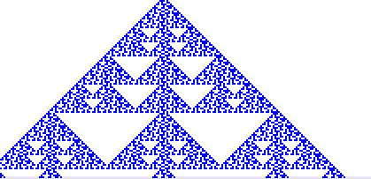

Purpose To see how some very simple local rules can give rise to fractals, and to more complicated behavior.
Materials Worksheets, pencil (much better than a pen, unless you have a bottle of white-out with your pen), CA software.
Background
Here are the basics of CA.
Procedure
Here is the procedure for conducting these experiments.
Conclusion Even these few examples show that simple, local rules can generate complicated behavior. Here we have done a tiny sample of CA rules. CA software can greatly speed up the search for interesting examples. However, counting the number of rules reveals even teraflop computers won't make any difference at all in these explorations, at least if we hope to see a nonnegligible fraction of all CA. There are 256 rules for neighborhoods with three cells (as in these examples); 4, 294, 967, 296 for neighborhoods with five cells; 13, 407, 807, 929, 942, 597, 099, 574, 024, 998, 205, 846, 127, 479, 365, 820, 592, 393, 377, 723, 561, 443, 721, 764, 030, 073, 546, 976, 801, 874, 298, 166, 903, 427, 690, 031, 858, 186, 486, 050, 853, 753, 882, 811, 946, 569, 946, 433, 649, 006, 084, 096 for neighborhoods with nine cells. Start exploring --- who knows what is waiting to be discovered?
Exercises
| exercise 1 |
| exercise 2 |
| exercise 3 |
| exercise 4 |
| exercise 5 |
| exercise 6 |
| exercise 7 |